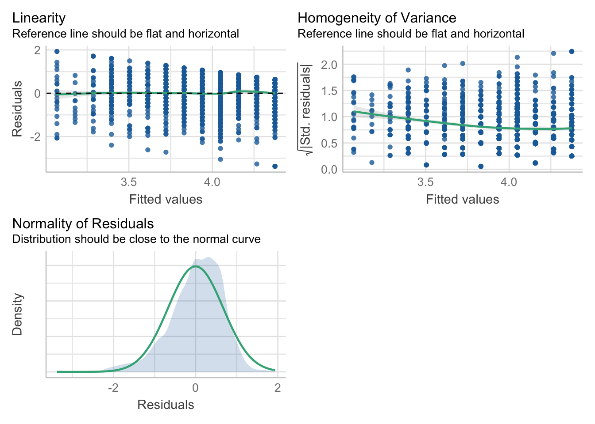
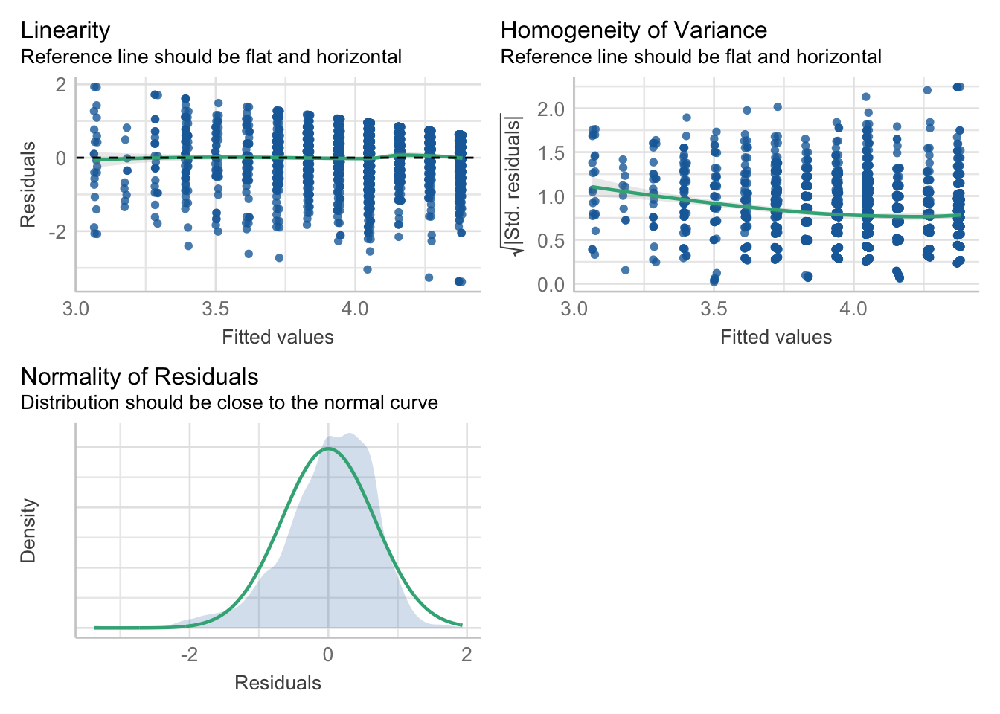
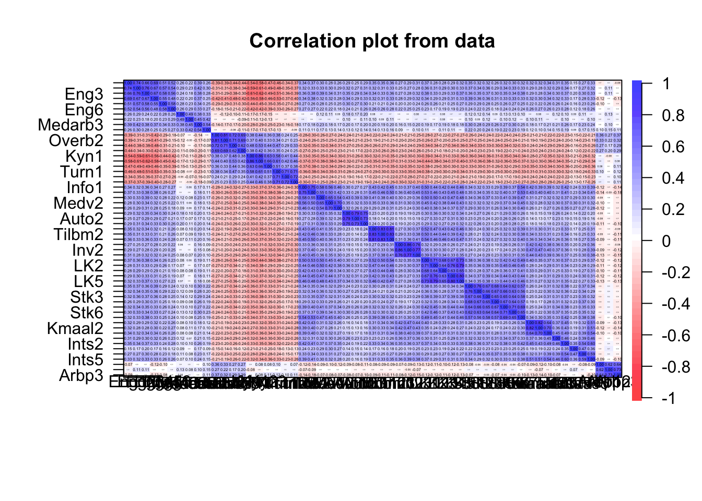
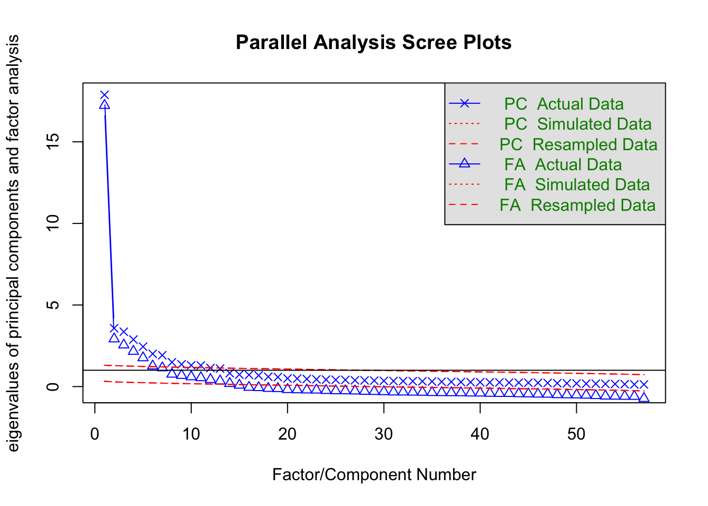

mydata <- readRDS("data2.rds")
table(complete.cases(mydata))
FALSE TRUE
108 2361 mydata <- mydata[ complete.cases(mydata), ]
dim(mydata)[1] 2361 77# View(mydata) se på dataenemydata <- readRDS("data2.rds")
table(complete.cases(mydata))
FALSE TRUE
108 2361 mydata <- mydata[ complete.cases(mydata), ]
dim(mydata)[1] 2361 77# View(mydata) se på dataenesummary(mydata$Alder) Min. 1st Qu. Median Mean 3rd Qu. Max.
19.00 39.00 47.00 46.92 55.00 72.00 sd(mydata$Alder)#standard avvik i tillegg[1] 10.60807hist(mydata$Alder)
Kjønn (OBS: Hvis du har problemer med æøå lag e
table(mydata$Kjoenn)
1 2
982 1379 prop.table(table(mydata$Kjoenn))#prosenter
1 2
0.4159255 0.5840745 Engasjement
summary(mydata$Engasjement) Min. 1st Qu. Median Mean 3rd Qu. Max.
1.000 3.667 4.167 4.036 4.667 5.000 sd(mydata$Engasjement)#standard avvik i tillegg[1] 0.7281558hist(mydata$Engasjement)
Kjønnsforskjell ift Engasjement:
t.test(mydata$Engasjement~mydata$Kjoenn)
Welch Two Sample t-test
data: mydata$Engasjement by mydata$Kjoenn
t = 1.3788, df = 2138, p-value = 0.1681
alternative hypothesis: true difference in means between group 1 and group 2 is not equal to 0
95 percent confidence interval:
-0.0176418 0.1011852
sample estimates:
mean in group 1 mean in group 2
4.059902 4.018131 mod <- lm(mydata$Engasjement ~ mydata$Autonomi)
summary(mod)
Call:
lm(formula = mydata$Engasjement ~ mydata$Autonomi)
Residuals:
Min 1Q Median 3Q Max
-3.3752 -0.3752 0.1108 0.4578 1.9308
Coefficients:
Estimate Std. Error t value Pr(>|t|)
(Intercept) 2.74269 0.06436 42.62 <2e-16 ***
mydata$Autonomi 0.32651 0.01588 20.57 <2e-16 ***
---
Signif. codes: 0 '***' 0.001 '**' 0.01 '*' 0.05 '.' 0.1 ' ' 1
Residual standard error: 0.6707 on 2359 degrees of freedom
Multiple R-squared: 0.152, Adjusted R-squared: 0.1517
F-statistic: 423 on 1 and 2359 DF, p-value: < 2.2e-16Antagelsene for regresjon
library(performance)
check_model(mod, check=c("linearity", "homogeneity", "normality"))
Korrelasjon
cor(mydata$Engasjement, mydata$Autonomi)[1] 0.38992Kontrollere for kjønn og alder
mod <- lm(Engasjement ~ Autonomi+Kjoenn+Alder, data=mydata)
summary(mod)
Call:
lm(formula = Engasjement ~ Autonomi + Kjoenn + Alder, data = mydata)
Residuals:
Min 1Q Median 3Q Max
-3.3805 -0.3766 0.1114 0.4547 1.9341
Coefficients:
Estimate Std. Error t value Pr(>|t|)
(Intercept) 2.7617931 0.0983123 28.092 <2e-16 ***
Autonomi 0.3263453 0.0159728 20.431 <2e-16 ***
Kjoenn -0.0085677 0.0280678 -0.305 0.760
Alder -0.0001039 0.0013076 -0.079 0.937
---
Signif. codes: 0 '***' 0.001 '**' 0.01 '*' 0.05 '.' 0.1 ' ' 1
Residual standard error: 0.6709 on 2357 degrees of freedom
Multiple R-squared: 0.1521, Adjusted R-squared: 0.151
F-statistic: 140.9 on 3 and 2357 DF, p-value: < 2.2e-16check_model(mod, check=c("linearity", "homogeneity", "normality"))
Nytt datasett kun med items og lag cor.plot over dem
library(psych)
item.df <- mydata[ , 21:77 ]
cor.plot(item.df)
Se på engasjement konstrukt.
library(lavaan);library(tidyverse)This is lavaan 0.6-19
lavaan is FREE software! Please report any bugs.
Attaching package: 'lavaan'The following object is masked from 'package:psych':
cor2cov── Attaching core tidyverse packages ──────────────────────── tidyverse 2.0.0 ──
✔ dplyr 1.1.4 ✔ readr 2.1.5
✔ forcats 1.0.0 ✔ stringr 1.5.1
✔ ggplot2 3.5.1 ✔ tibble 3.2.1
✔ lubridate 1.9.3 ✔ tidyr 1.3.1
✔ purrr 1.0.2
── Conflicts ────────────────────────────────────────── tidyverse_conflicts() ──
✖ ggplot2::%+%() masks psych::%+%()
✖ ggplot2::alpha() masks psych::alpha()
✖ dplyr::filter() masks stats::filter()
✖ dplyr::lag() masks stats::lag()
ℹ Use the conflicted package (<http://conflicted.r-lib.org/>) to force all conflicts to become errorsmodel <- "ENG =~ Eng1+Eng2+Eng3+Eng4+Eng5+Eng6"
f <- cfa(model, data=item.df)#confirmatory factor analysis
head(standardizedsolution(f),6) lhs op rhs est.std se z pvalue ci.lower ci.upper
1 ENG =~ Eng1 0.817 0.008 101.585 0 0.801 0.833
2 ENG =~ Eng2 0.876 0.006 139.929 0 0.864 0.888
3 ENG =~ Eng3 0.847 0.007 118.870 0 0.833 0.861
4 ENG =~ Eng4 0.790 0.009 88.920 0 0.772 0.807
5 ENG =~ Eng5 0.678 0.012 55.965 0 0.655 0.702
6 ENG =~ Eng6 0.648 0.013 50.142 0 0.623 0.674Reliabilitet
eng = item.df[, paste0("Eng", 1:6)]
#reliability(eng)model <- "ENG =~ Eng1+Eng2+Eng3+Eng4+Eng5+Eng6; AUT=~Auto1+Auto2+Auto3"
f <- cfa(model, data=item.df)#confirmatory factor analysis
standardizedsolution(f) %>% tail(1) lhs op rhs est.std se z pvalue ci.lower ci.upper
21 ENG ~~ AUT 0.424 0.019 22.469 0 0.387 0.461Korrelasjonene er større nå enn når vi brukte mean scores.
utbr = item.df %>% select(matches("Overb|Kyn"))#10 items
f <- fa(utbr, 2)#spesifiserer 2 faktorerLoading required namespace: GPArotationf$loadings
Loadings:
MR1 MR2
Overb1 0.917
Overb2 0.932
Overb3 0.700 0.192
Overb4 0.737
Kyn1 0.918
Kyn2 0.938
Kyn3 0.663
MR1 MR2
SS loadings 2.750 2.208
Proportion Var 0.393 0.315
Cumulative Var 0.393 0.708Korrelasjonen:
model <- "OVERB =~ Overb1+Overb2+Overb3+Overb4;
KYN=~ Kyn1+Kyn2+Kyn3"
f <- cfa(model, data=item.df)#confirmatory factor analysis
standardizedsolution(f) %>% tail(1) lhs op rhs est.std se z pvalue ci.lower ci.upper
17 OVERB ~~ KYN 0.534 0.016 32.612 0 0.502 0.566f <- fa(item.df, 15)#spesifiserer 15 faktorer
f$loadings
Loadings:
MR5 MR1 MR2 MR9 MR10 MR8 MR6 MR14 MR4 MR12
Eng1 0.662 -0.161
Eng2 0.754
Eng3 0.723
Eng4 0.616 -0.156
Eng5 0.653
Eng6 0.597 0.138
Medarb1
Medarb2
Medarb3 0.100 0.126
Medarb4 0.107
Overb1 0.851
Overb2 0.910
Overb3 0.663 0.144
Overb4 0.705
Kyn1 0.871
Kyn2 0.885
Kyn3 0.572
Turn1 0.158 0.702
Turn2 0.894
Turn3 0.839
Info1
Info2
Medv1 0.109 0.149
Medv2
Medv3
Auto1 0.886
Auto2 0.888
Auto3 0.817
Tilbm1 0.885
Tilbm2 0.936
Tilbm3 0.845
Inv1 0.950
Inv2 0.921
Inv3 0.753
LK1 0.653 0.117
LK2 0.827
LK3 0.648
LK4 0.846
LK5 0.900
Stk1 0.801
Stk2 0.822
Stk3 0.736
Stk4 0.819
Stk5 0.750
Stk6 0.708 0.111
Stk7 0.562
Kmaal1 0.801
Kmaal2 0.930
Kmaal3 0.621
Ints1 0.103 0.134 0.156
Ints2 0.152
Ints3
Ints4
Ints5 0.229
Arbp1
Arbp2
Arbp3
MR3 MR13 MR11 MR7 MR15
Eng1
Eng2
Eng3
Eng4
Eng5
Eng6 0.131
Medarb1 0.552
Medarb2 0.763
Medarb3 0.593
Medarb4 0.567
Overb1
Overb2
Overb3
Overb4
Kyn1
Kyn2
Kyn3
Turn1
Turn2
Turn3
Info1 0.108 0.736
Info2 0.681
Medv1 0.427 0.206
Medv2 0.845
Medv3 0.747
Auto1
Auto2
Auto3
Tilbm1
Tilbm2
Tilbm3
Inv1
Inv2
Inv3
LK1
LK2
LK3
LK4
LK5
Stk1
Stk2
Stk3
Stk4
Stk5
Stk6
Stk7 0.281
Kmaal1
Kmaal2
Kmaal3 0.168
Ints1 0.290
Ints2 0.498
Ints3 0.484 0.176
Ints4 0.757
Ints5 0.608
Arbp1 0.717
Arbp2 0.865
Arbp3 0.842
MR5 MR1 MR2 MR9 MR10 MR8 MR6 MR14 MR4 MR12
SS loadings 3.976 3.137 2.760 2.592 2.448 2.365 2.303 1.963 2.042 2.030
Proportion Var 0.070 0.055 0.048 0.045 0.043 0.041 0.040 0.034 0.036 0.036
Cumulative Var 0.070 0.125 0.173 0.219 0.262 0.303 0.344 0.378 0.414 0.449
MR3 MR13 MR11 MR7 MR15
SS loadings 2.016 1.570 1.535 1.616 1.192
Proportion Var 0.035 0.028 0.027 0.028 0.021
Cumulative Var 0.485 0.512 0.539 0.568 0.588fa.parallel(item.df)
Parallel analysis suggests that the number of factors = 14 and the number of components = 11